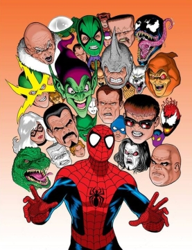

<!DOCTYPE html>
<html lang="en">
<head>
    <meta charset="UTF-8">
    <meta name="viewport" content="width=device-width, initial-scale=1.0">
    <title>SpiderMan</title>
    <link rel="stylesheet" href="style.css">
</head>
<body>
    

    <!-- <h1>Notepad</h1>
    <p></p>
    <input type="text" placeholder="type here"> -->
    <!-- <form action="/action">
        <input type="text" placeholder="username" id="user">
        <input type="password" placeholder="password" id="pass">
        <button>Register</button>
    </form> -->

    <!-- <input type="text" placeholder="type something">
    <button>Click ME!</button> -->

    <!-- <button>Click me!</button>
    <button>like me!</button>
    <button>share me!</button>
    <button>repost me!</button>
    <button>comment me!</button> -->
    
    <!-- <h1>Spider-Man</h1>
    
    <h2>About us</h2>
    <p>
        <b>Spider-Man</b> is a <a href="/wiki/Superhero" title="Superhero">superhero</a> appearing in <a href="/wiki/American_comic_book" title="American comic book">American comic books</a> published by <a href="/wiki/Marvel_Comics" title="Marvel Comics">Marvel Comics</a>. Created by writer-editor <a href="/wiki/Stan_Lee" title="Stan Lee">Stan Lee</a> and artist <a href="/wiki/Steve_Ditko" title="Steve Ditko">Steve Ditko</a>, he <a href="/wiki/First_appearance" title="First appearance">first appeared</a> in the <a href="/wiki/Anthology" title="Anthology">anthology</a> comic book <i><a href="/wiki/Amazing_Fantasy" title="Amazing Fantasy">Amazing Fantasy</a></i> #15 (August 1962) in the <a href="/wiki/Silver_Age_of_Comic_Books" title="Silver Age of Comic Books">Silver Age of Comic Books</a>. He has been featured in <a href="/wiki/List_of_Spider-Man_titles" title="List of Spider-Man titles">comic books</a>, <a href="/wiki/Spider-Man_in_television" title="Spider-Man in television">television shows</a>, <a href="/wiki/Spider-Man_in_film" title="Spider-Man in film">films</a>, <a href="/wiki/List_of_video_games_featuring_Spider-Man" title="List of video games featuring Spider-Man">video games</a>, <a href="/wiki/Spider-Man_in_literature" title="Spider-Man in literature">novels, and plays</a>.
    </p>
    <div class="box">
        <h2>Publication info</h2>
        <ul class="boxlink">
            <li><a href="#">Publisher</a></li>
            <li><a href="#">First Apperance</a></li>
            <li>Created by</li>
            <ul>
                <li><a href="#">Stan Lee</a></li>
                <li><a href="#">Steve</a></li>
            </ul>
        </ul>
    </div>
    <h2>Creation & Development</h2>
    <p id = "description">
        In 1962, with the success of the Fantastic Four, Marvel Comics editor and head writer Stan Lee was casting for a new superhero idea. He said the idea for Spider-Man arose from a surge in teenage demand for comic books and the desire to create a character with whom teens could identify.[15]: 1  As with Fantastic Four, Lee saw Spider-Man as an opportunity to "get out of his system" what he felt was missing in comic books
    </p>
    <div class="images">
        
        
        
    </div> -->

    <script src="app.js"></script>
</body>
</html>